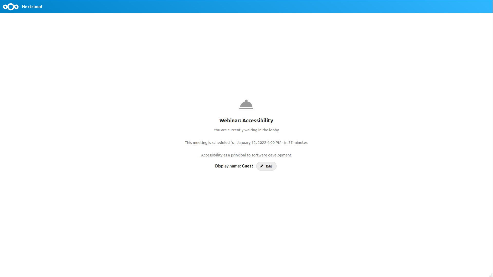
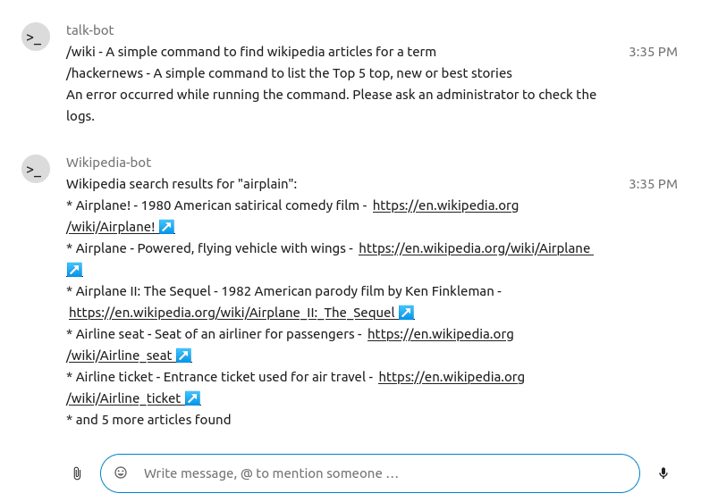

Fonctionnalités avancées de Discussion
Nextcloud Discussion propose des fonctionnalités que les utilisateurs pourraient trouver utiles.
Matterbridge
L’intégration de Matterbridge dans Nextcloud Discussion permet de créer des “passerelles” entre les conversations Discussion et les conversations sur d’autres services de chat tels que MS Teams, Discord, Matrix ou autres. Vous trouverez la liste des protocoles supportés sur la page github de Matterbridge.
Un modérateur peut ajouter une connexion Matterbridge dans les paramètres d’une discussion.

Chaque passerelle a ses propres besoins en terme de configuration. La plupart des informations sont disponibles en anglais dans le wiki Matterbridge et sont accessible par le sous-menu more information du menu .... Vous pouvez aussi accéder directement au wiki.
Salle d’attente
La salle d’attente vous permet d’afficher un message d’accueil aux participants avant que l’appel ne démarre. Cette fonctionnalité est par exemple utile pour les webinaires avec des participants externes.
Vous pouvez choisir de laisser les participants rejoindre l’appel à un heure donnée ou quand vous fermez manuellement la salle d’attente.
Commandes
Nextcloud permet aux utilisateurs de réaliser des actions via des commandes. Une commande peut ressembler à :
/wiki avions
Les administrateurs peuvent configurer, activer et désactiver les commandes. les utilisateurs peuvent trouver les commandes disponibles avec la commande help.

/help
Retrouvez plus d’informations dans la documentation administrateur pour Discussion.
Discussion depuis Fichiers
Dans l’application Fichiers, vous pouvez discuter au sujet d’un fichier depuis la barre latérale, et même faire un appel tout en l’éditant. Pour cela, vous devez, en premier lieu, rejoindre le chat.


Vous pouvez alors discuter ou avoir un appel avec les autres participants, même en éditant le fichier.

Une conversation sera créée sur le fichier dans Discussion. Vous pouvez donc discuter depuis l’application ou revenir au fichier via le menu ... en haut à droite de la page.

Créer des tâches depuis une conversation ou partager des tâches dans une conversation
Si l’application Deck est installée, vous pouvez utiliser le menu … d’un message de discussion et transformer le message en tâche Desk.


Depuis le Deck, vous pouvez partager des tâches dans une conversation.


Breakout rooms
Breakout rooms allow you to divide a Nextcloud Talk call into smaller groups for more focused discussions. The moderator of the call can create multiple breakout rooms and assign participants to each room.
Configure breakout rooms
To create breakout rooms, you need to be a moderator in a group conversation. Click on the top-bar menu and click on « Setup breakout rooms ».

A dialog will open where you can specify the number of rooms you want to create and the participants assignment method. Here you’ll be presented with 3 options:
Automatically assign participants: Talk will automatically assign participants to the rooms.
Manually assign participants: You’ll go through a participants editor where you can assign participants to rooms.
Allow participants choose: Participants will be able to join breakout rooms themselves.

Manage breakout rooms
Once the breakout rooms are created, you will be able to see them in the sidebar.

From the sidebar header
Start and stop the breakout rooms: this will move all the users in the parent conversation to their respective breakout rooms.
Broadcast a message to all the rooms: this will send a message to all the rooms at the same time.
Make changes to the assigned participants: this will open the participants editor where you can change which participans are assigned to which breakout room. From this dialog it’s also possible to delete the breakout rooms.

From the breakout room element in the sidebar, you can also join a particular breakout room or send a message to a specific room.